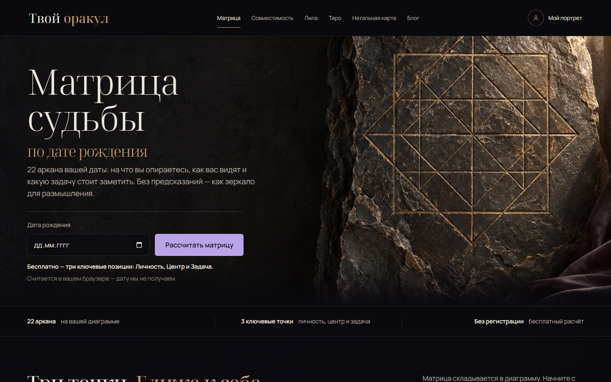
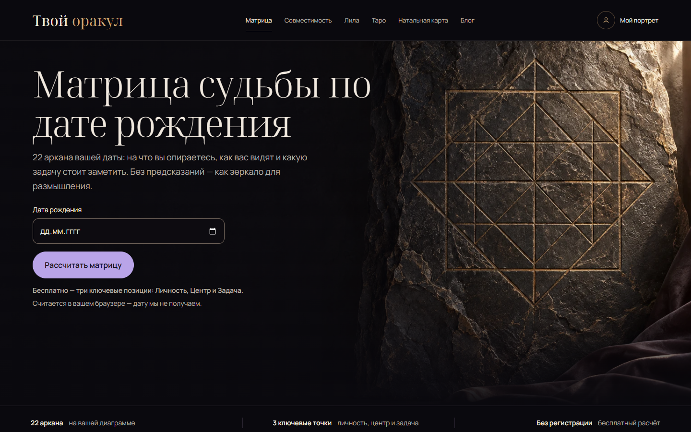
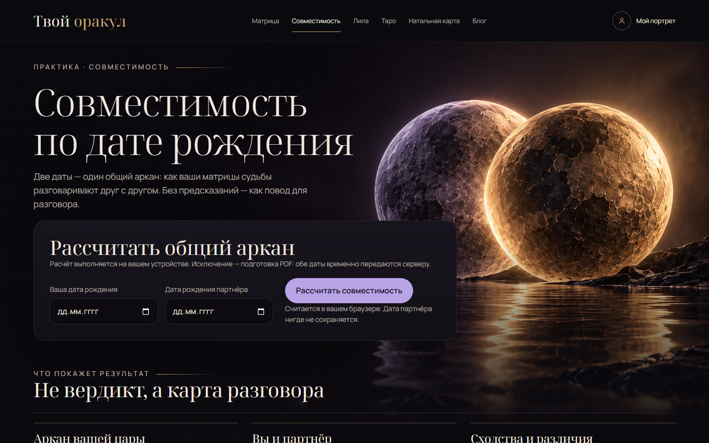
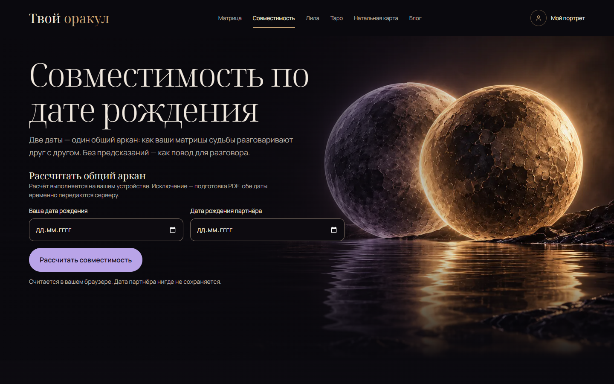
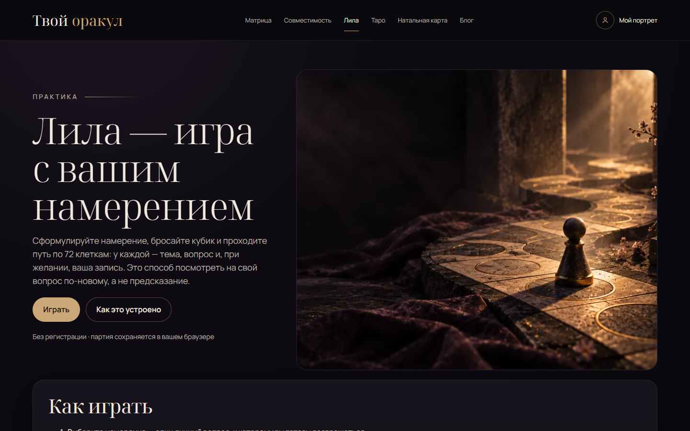
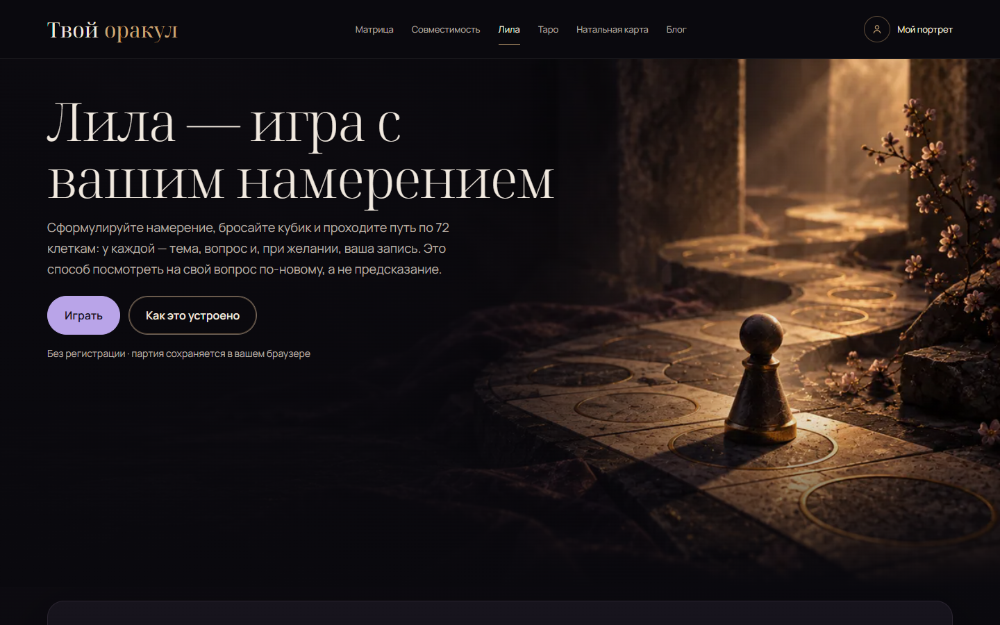
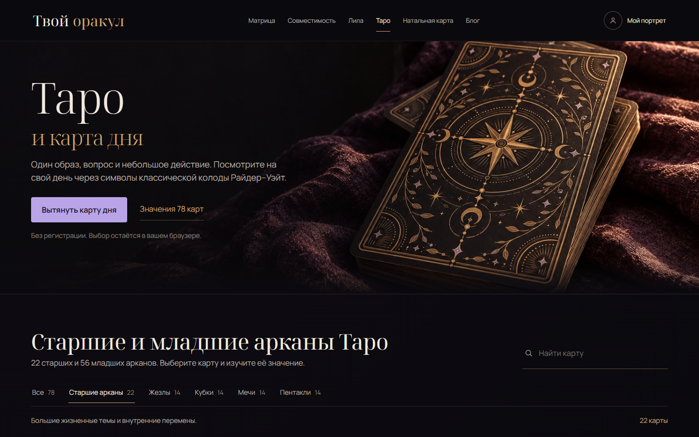
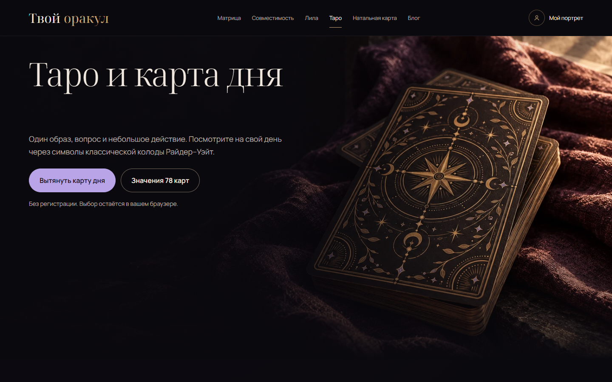
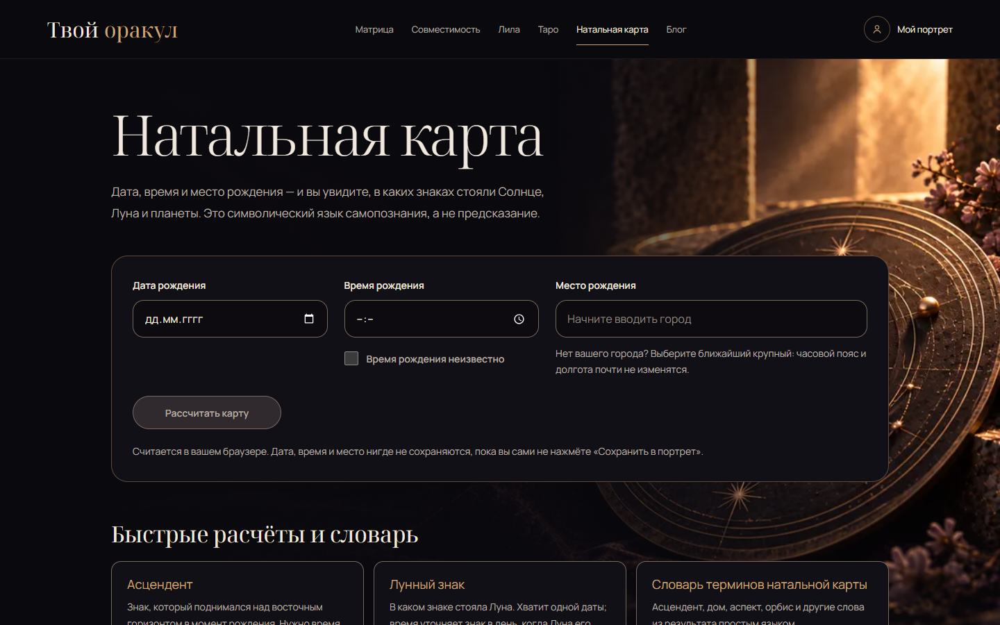
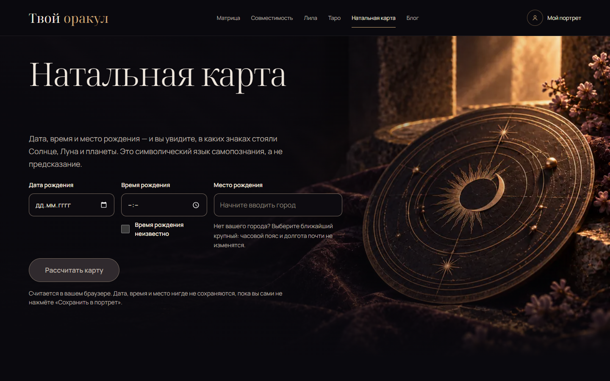

Матрица судьбы
Открыть автономный макет



Совместимость
Открыть автономный макет











Натальная карта
Открыть автономный макет



Живые страницы до и после правок CSS. Ширины снимков: 1440 и 375 px. Лавандовая пилюля, полноширинная сцена, формы на фоне. Заголовок и логотип стоят на одном левом краю.
Автономные HTML-макеты используют исходную разметку, локальные шрифты и изображения. Расчёты и меню в этих копиях не подключены. Рабочие калькуляторы проверены на локальном сайте.









